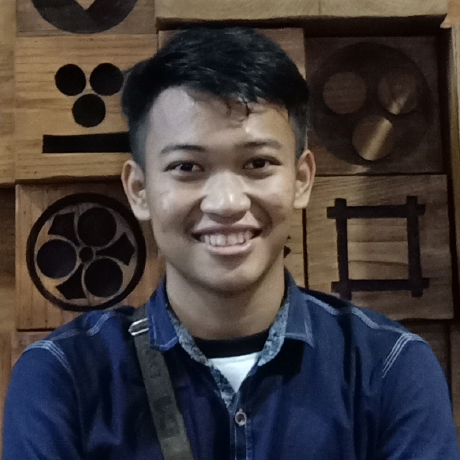
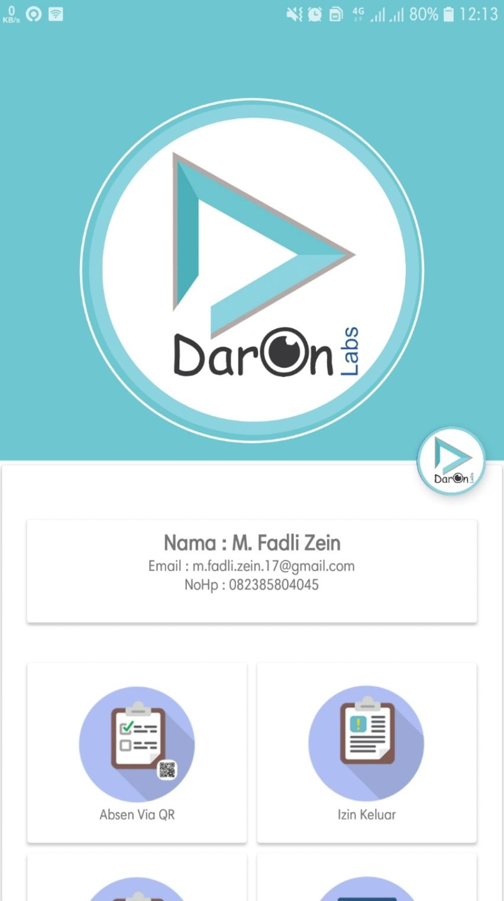
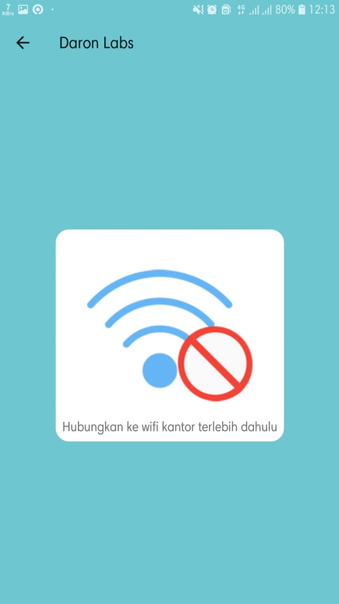
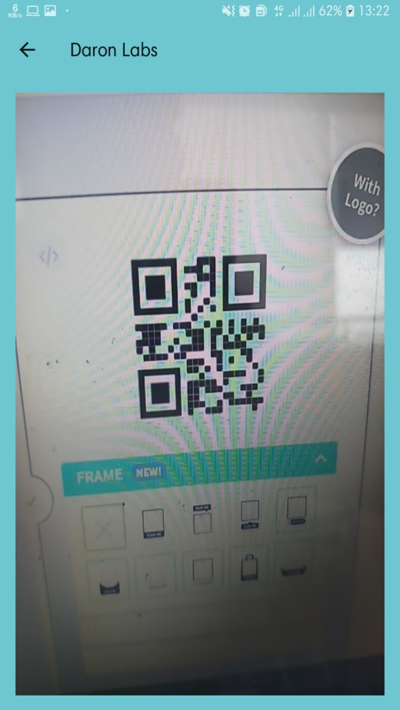
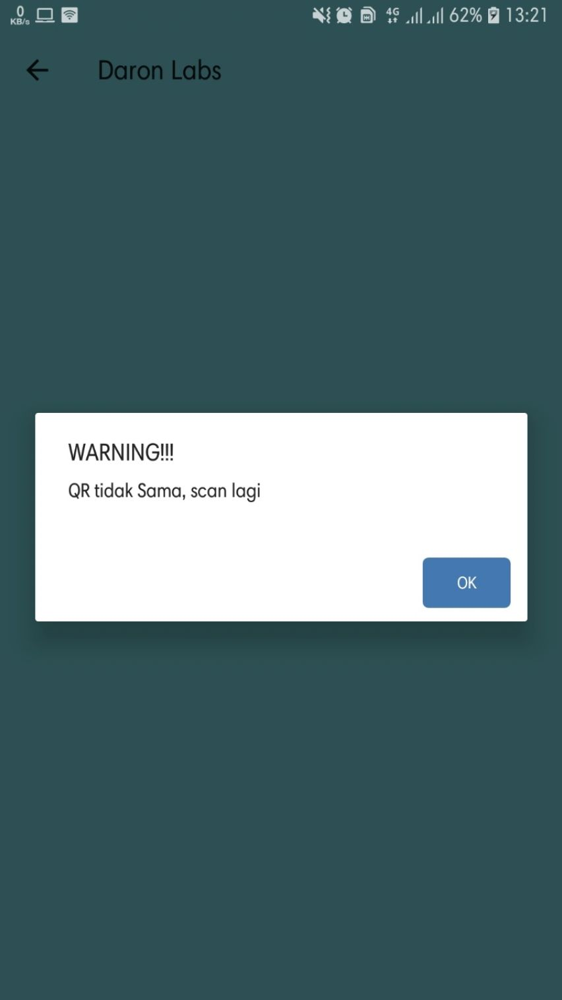

M Fadli Zein
Android Developer - Web Developer
- Emailm.fadli.zein.17@gmail.com
- Telp/WA+62 823 8580 4045
- Lahir10 Juli, 1997
- DomisiliPadang. INDONESIA
Daron Labs
Daron Labs Absent, is an application used by Daron Labs to take attendance for employees, this application takes attendance by scanning a QR code, and the smartphone must be connected to office wifi, and must be at office coordinates. For employees who have already taken attendance, employees must wait 8 hours so they can take the absences to go home.




Technology.
- Kotlin
- Barcode
- MVP Pattern